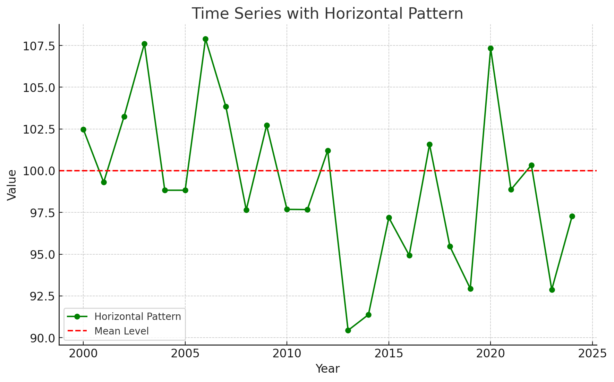
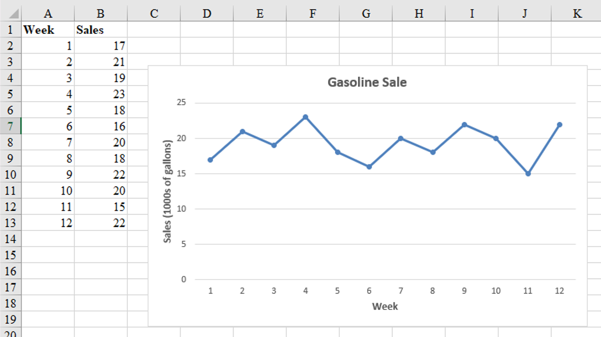
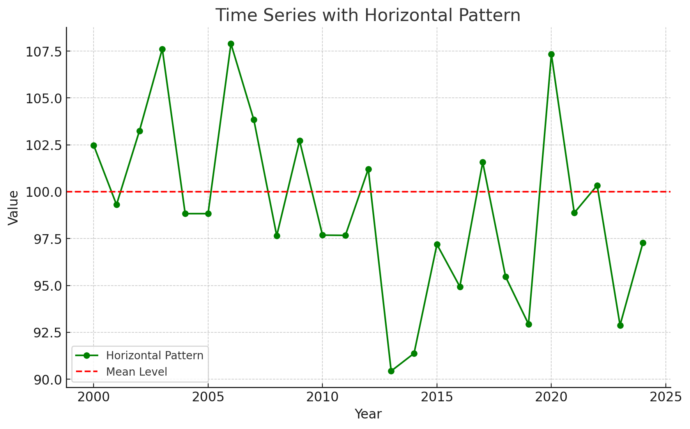
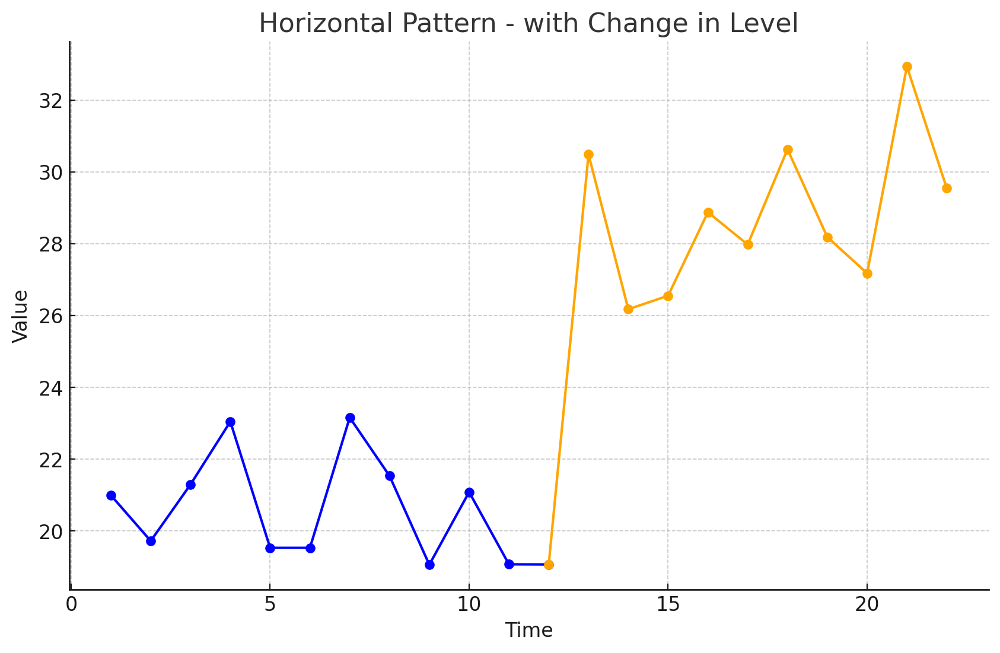
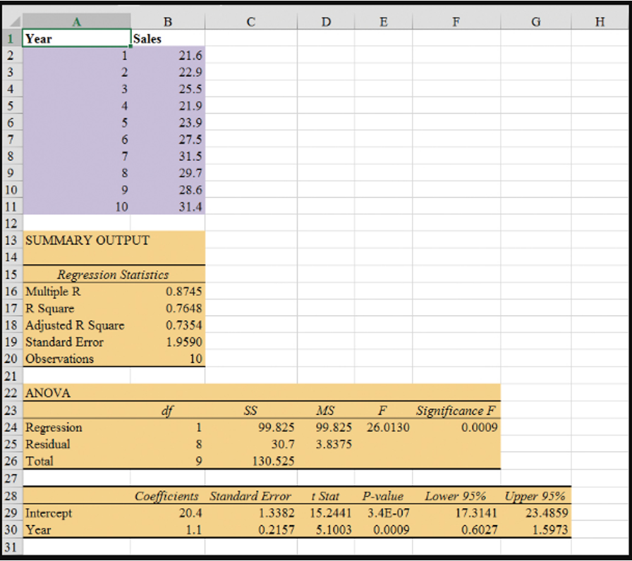
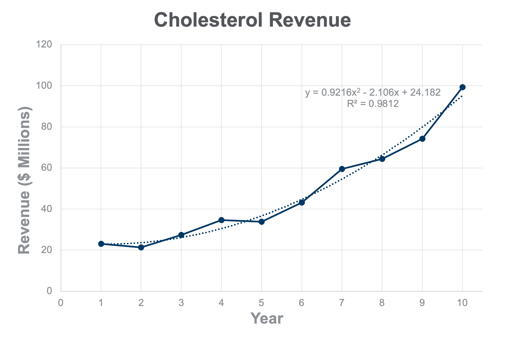
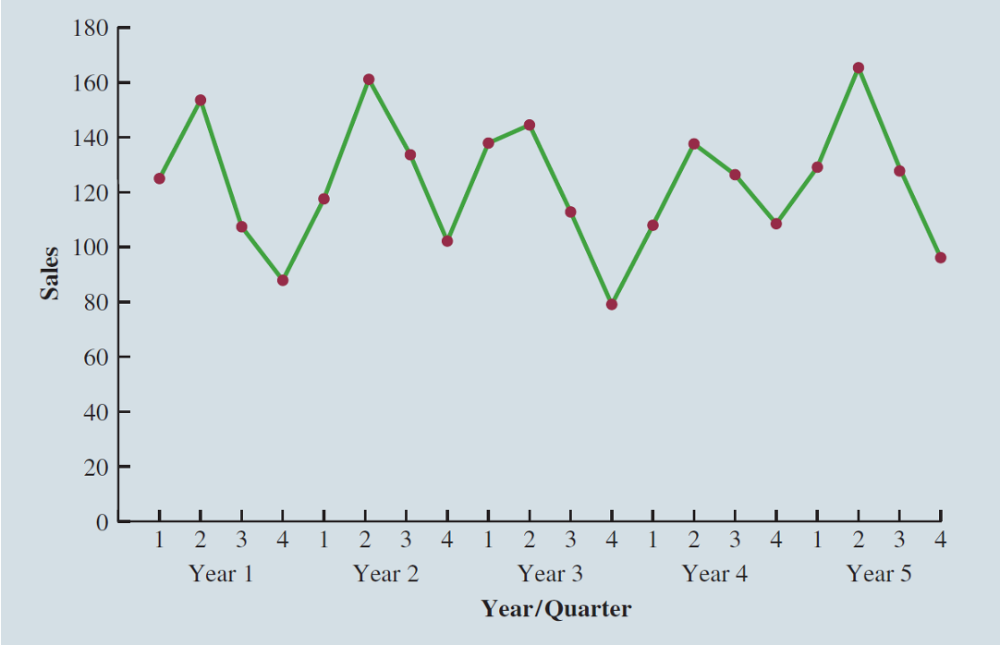

Time Series and Forecasting
August 01, 2024
Time series are especially important in business applications since they are involved in forecasting (revenues, expenses, stock prices, inventory levels, etc.).
A time series is a sequence of measurements (of a variable) taken every hour, day, week, month, quarter, year, or any other regular time interval.
The pattern of the data is crucial for understanding how the time series has behaved over time.
If such behavior can be expected to continue in the future, we can use it to select an appropriate forecasting method.
Forecasting methods can be classified as qualitative or quantitative.
Qualitative methods generally involve expert judgment to develop forecasts.
We will focus on quantitative forecasting methods.
Quantitative forecasting methods can be used when:
In such cases, a forecast can be developed using a time series or a causal method.
Quantitative methods are based on an analysis of historical data concerning one or more time series.
A time series is a set of observations measured at successive points in time.
Time Series Method: Restricts data to past values of the series.
Causal Method: Uses other time series believed to be related to the time series to be forecasted.
Time Series Analysis
Causal Methods
Regression Analysis: Time is treated as the independent variable, and the time series as the dependent variable.
Time-Series Regression: The sole independent variable is time.
Cross-Sectional Regression: The independent variables are something other than time.
The first step in selecting an appropriate forecasting method is to construct a time series plot to identify patterns.
A time series plot is a graphical presentation of the relationship between time and the time series variable.
It is a scatterplot where time is on the horizontal axis, and the time series values are on the vertical axis.
Gasoline sale time series
The number of gallons of gasoline sold by a gasoline distributor over a period of 12 weeks is given in the table below. The distributor would like to identify the underlying pattern in the data to guide it in selecting an appropriate forecasting method.
| Week | Sales | Week | Sales |
|---|---|---|---|
| 1 | 17 | 7 | 20 |
| 2 | 21 | 8 | 18 |
| 3 | 19 | 9 | 22 |
| 4 | 23 | 10 | 20 |
| 5 | 18 | 11 | 15 |
| 6 | 16 | 12 | 22 |
Gasoline sales time series
The common types of data patterns that can be identified when examining a time series plot include:
A horizontal pattern exists when the data fluctuate around a constant mean.
Changes in business conditions can often result in a time series that shifts to a new level.
It is more difficult to choose an appropriate forecasting method to identify a change in the level of the time series. (The Change-time problem.)


A time series may show gradual drifts or movements to relatively higher or lower values over a longer period of time.
Trend is usually the result of long-term factors such as changes in the population, demographics, technology, or consumer preferences.
A trend pattern can be identified by analyzing multiperiod movements in historical data.
Seasonal patterns are recognized by seeing the same repeating pattern of highs and lows over successive periods of time (within a “short” period of time).
A seasonal pattern might occur within a day, week, month, quarter, or year.
A seasonal pattern does not necessarily refer to the four seasons of the year.
Some time series include a combination of a trend and seasonal pattern.
Time series decomposition can be used to separate or decompose a time series into trend and seasonal components.
A cyclical pattern exists if the time series plot shows an alternating sequence of points below and above the trend line lasting more than one year.
Often, the cyclical component of a time series is due to multiyear business cycles.
Business cycles are difficult, if not impossible, to forecast.
The underlying pattern in the time series is an important factor in selecting a forecasting method.
A time series plot should be one of the first tools developed to determine what forecasting method to use.
If we see a horizontal pattern, then we need to select a method appropriate for this type of pattern.
If we observe a trend in the data, then we need to use a method that can handle the trend effectively.
Measures of forecast accuracy are used to determine how well a particular forecasting method can reproduce the time series data that we already have.
Forecast accuracy measures are important factors in comparing different forecasting methods.
By selecting the method that has the best accuracy, we will obtain better forecasts for future time periods.
\[ \text{Forecast Error} = \text{Actual Observed Value} - \text{Forecast} \]
\[ \text{Residual} = \text{Observed} - \text{Predicted} \]
A positive forecast error indicates the forecasting method underestimated the actual value.
A negative forecast error indicates the forecasting method overestimated the actual value.
A forecast error is basically a residual.
Mean Error (ME): ME is the mean or average of the forecast errors. Because positive and negative forecast errors tend to offset one another, the mean error is likely to be small. Thus, the mean error is not a very useful measure.
Mean Absolute Error (MAE): MAE avoids the problem of positive and negative errors offsetting one another. It is the mean of the absolute values of the forecast errors.
Mean Squared Error (MSE): MSE also avoids the problem of positive and negative errors offsetting one another. It is the average of the squared forecast errors.
Mean Absolute Percentage Error (MAPE): The size of MAE and MSE depend upon the scale of the data, so it is difficult to make comparisons for different time periods. To make such comparisons, we need to work with relative or percentage error measures. Percentage Error is the error divided by the observed value of the time series. The MAPE is the average of the absolute percentage errors of the forecasts.
To forecast for time \(t+1\), we use time series data up to and including time \(t\). There are different ways of using this data.
To demonstrate the computation of these measures of forecast accuracy, we will introduce the simplest of forecasting methods.
The naïve forecasting method uses only the most recent observation in the time series as the forecast for the next time period.
\[ F_{t+1} = Y_t, \text{ the actual observed value in period } t \]
Gasoline sale time series
| Week | Observed Time series | Naïve Forecast | Forecast error | Absolute value of forecast error | Squared forecast error | Percentage error | Absolute value of percentage error |
|---|---|---|---|---|---|---|---|
| 1 | 17 | ||||||
| 2 | 21 | 17 | 4 | 4 | 16 | 19.05 = \(\frac{4}{21}\) | 19.05 |
| 3 | 19 | 21 | -2 | 2 | 4 | -10.53 | 10.53 |
| 4 | 23 | 19 | 4 | 4 | 16 | 17.39 | 17.39 |
| 5 | 18 | 23 | -5 | 5 | 25 | -27.78 | 27.78 |
| 6 | 16 | 18 | -2 | 2 | 4 | -12.5 | 12.5 |
| 7 | 20 | 16 | 4 | 4 | 16 | 20.00 | 20.00 |
| 8 | 18 | 20 | -2 | 2 | 4 | -11.11 | 11.11 |
Gasoline sale time series
| Week | Observed Time series | Forecast | Forecast error | Absolute value of forecast error | Squared forecast error | Percentage error | Absolute value of percentage error |
|---|---|---|---|---|---|---|---|
| 9 | 22 | 18 | 4 | 4 | 16 | 18.18 | 18.18 |
| 10 | 20 | 22 | -2 | 2 | 4 | -10.00 | 10.00 |
| 11 | 15 | 20 | -5 | 5 | 25 | -33.33 | 33.33 |
| 12 | 22 | 15 | 7 | 7 | 49 | 31.82 | 31.82 |
| Totals | 5 | 41 | 179 | 1.19 | 211.69 |
Gasoline sale time series: Naive Forecast Accuracy
\[ \text{MAE} = \frac{41}{11} = 3.73 \]
\[ \text{MSE} = \frac{179}{11} = 16.27 \]
\[ \text{MAPE} = \frac{211.69}{11} = 19.24\% \]
Three forecasting methods that are appropriate for a time series with a horizontal pattern:
Moving Averages (MAs)
Weighted Moving Averages
Exponentially Weighted Moving Averages (EWMAs)
They are called smoothing methods because their objective is to smooth out the random fluctuations (due to random errors or noises) in the time series.
They are most appropriate for short-range forecasts.
\[ MA_t = \text{Average of most recent } k \text{ data values} = \frac{Y_{t-k+1} + \cdots + Y_{t-1} + Y_t}{k}, \text{ at time } t \]
\[ F_{t+1} = MA_t \]
Where:
\[ F_{t+1} = \text{forecast of the time series for period } t + 1 \]
\[ Y_t = \text{observed value of the time series in period } t \]
\[ k = \text{span} \]
Each observation in the moving average calculation receives the same weight \((1/k)\).
The term moving is used because every time a new observation becomes available for the time series, it replaces the oldest observation in the equation.
As a result, the average will change, or move, as new observations become available.
To use moving averages to forecast, we must first select the span, which is the number of observed time series values to be included in the moving average.
Example: Gasoline sale time series: three-week moving average (\(k = 3\))
| Week | Time series value | Forecast | Forecast error | Absolute value of forecast error | Squared forecast error | Percentage error | Absolute value of percentage error |
|---|---|---|---|---|---|---|---|
| 1 | 17 | ||||||
| 2 | 21 | ||||||
| 3 | 19 | ||||||
| 4 | 23 | 19* | 4 | 4 | 16 | 17.39 | 17.39 |
| 5 | 18 | 21** | -3 | 3 | 9 | -16.67 | 16.67 |
| 6 | 16 | 20 | -4 | 4 | 16 | -25.00 | 25.00 |
| 7 | 20 | 19 | 1 | 1 | 1 | 5.00 | 5.00 |
| 8 | 18 | 18 | 0 | 0 | 0 | 0.00 | 0.00 |
\[ * = (17 + 21 + 19) / 3 = 19 \]
\[ ** = (21 + 19 + 23) / 3 = 21 \]
Example: Gasoline sale time series: three-week moving average
| Week | Time series value | Forecast | Forecast error | Absolute value of forecast error | Squared forecast error | Percentage error | Absolute value of percentage error |
|---|---|---|---|---|---|---|---|
| 9 | 22 | 18 | 4 | 4 | 16 | 18.18 | 18.18 |
| 10 | 20 | 20 | 0 | 0 | 0 | 0.00 | 0.00 |
| 11 | 15 | 20 | -5 | 5 | 25 | -33.33 | 33.33 |
| 12 | 22 | 19 | 3 | 3 | 9 | 13.64 | 13.64 |
| Totals | 0 | 24 | 92 | -20.79 | 129.21 |
Example: Gasoline sale time series: three-week moving average
\[ \text{MAE} = \frac{24}{9} = 2.67 \]
\[ \text{MSE} = \frac{92}{9} = 10.22 \]
\[ \text{MAPE} = \frac{129.21}{9} = 14.36\% \]
Example: Gasoline sales time series: three-week moving average
Weighted Moving Averages (A brief description)
Next, we must choose the weight for each of the data values.
For the Gasoline data, a three-period weighted moving average (3WMA) for Week 3 is:
\[ WMA_3 = \frac{1}{6}(17) + \frac{2}{6}(21) + \frac{3}{6}(19) = 19.33 \]
The exponential smoothing forecast is a weighted average of all the time series data up to the current period.
We select only the weight between 0 and 1 for the most recent observation. This weight is called the smoothing constant and is denoted by \(\alpha\).
The term exponential smoothing comes from the exponential nature of the weighting scheme for the historical values.
The statistic computed in each period is called the Exponentially Weighted Moving Average (EWMA).
\[ F_2 = Y_1 \quad (\text{to initiate the computations}) \]
\[ F_{t+1} = \alpha Y_t + (1 - \alpha) F_t, \quad t = 2, 3, \dots \]
where:
\(F_{t+1}\) = forecast of the time series for period \(t + 1\)
\(Y_t\) = actual value of the time series in period \(t\)
\(F_t\) = forecast of the time series for period \(t\)
\[ F_2 = Y_1 \quad (\text{to initiate the computations; no } F_1) \]
\[ F_3 = \alpha Y_2 + (1 - \alpha) F_2 \]
\[ F_4 = \alpha Y_3 + (1 - \alpha) F_3 \]
\[ F_5 = \alpha Y_4 + (1 - \alpha) F_4 \]
\[ F_{t+1} = F_t + \alpha (Y_t - F_t) \]
We adjust the current forecast \(F_t\) by \(\alpha\) times the current forecast error, \(Y_t - F_t\), as the forecast for the next period \(t + 1\).
Why “exponential”?
\[ F_{t+1} : Y_1, Y_2, ...., Y_{t-2}, Y_{t-1}, Y_t \quad (t : current) \]
Gasoline sale time series
The number of gallons of gasoline sold by a distributor over a period of 12 weeks is given below. The distributor uses exponential smoothing to forecast sales. Which value for the smoothing constant \(\alpha\), 0.2 or 0.3, gives better forecasts?
| Week | Sales | Week | Sales |
|---|---|---|---|
| 1 | 17 | 7 | 20 |
| 2 | 21 | 8 | 18 |
| 3 | 19 | 9 | 22 |
| 4 | 23 | 10 | 20 |
| 5 | 18 | 11 | 15 |
| 6 | 16 | 12 | 22 |
Gasoline sale time series with smoothing constant \(\alpha = 0.2\)
| Week | Time series value | Forecast | Forecast error | Squared forecast error |
|---|---|---|---|---|
| 1 | 17 | |||
| 2 | 21 | 17 | 4.00 | 16.00 |
| 3 | 19 | 17.80* | 1.20 | 1.44 |
| 4 | 23 | 18.04** | 4.96 | 24.60 |
| 5 | 18 | 19.03 | -1.03 | 1.06 |
| 6 | 16 | 18.83 | -2.83 | 8.01 |
| 7 | 20 | 18.26 | 1.74 | 3.03 |
| 8 | 18 | 18.61 | -0.61 | 0.37 |
\[ * 17.80 = 0.2(21) + 0.8(17) \]
\[ ** 18.04 = 0.2(19) + 0.8(17.80) \]
Gasoline sale time series with smoothing constant \(\alpha = 0.2\)
| Week | Time series value | Forecast | Forecast error | Squared forecast error |
|---|---|---|---|---|
| 9 | 22 | 18.49 | 3.51 | 12.32 |
| 10 | 20 | 19.19 | 0.81 | 0.66 |
| 11 | 15 | 19.35 | -4.35 | 18.92 |
| 12 | 22 | 18.48 | 3.52 | 12.39 |
| Totals | 10.92 | 98.80 |
Gasoline sale time series with smoothing constant \(\alpha = 0.2\)
\[ \text{MSE} = \frac{98.80}{11} = 8.98 \]
Gasoline sale time series with smoothing constant \(\alpha = 0.3\)
| Week | Time series value | Forecast | Forecast error | Squared forecast error |
|---|---|---|---|---|
| 1 | 17 | |||
| 2 | 21 | 17 | 4 | 16 |
| 3 | 19 | 18.20 | 0.80 | 0.64 |
| 4 | 23 | 18.44 | 4.56 | 20.79 |
| 5 | 18 | 19.81 | -1.81 | 3.28 |
| 6 | 16 | 19.27 | -3.27 | 10.69 |
| 7 | 20 | 18.29 | 1.71 | 2.92 |
| 8 | 18 | 18.80 | -0.80 | 0.64 |
Gasoline sale time series with smoothing constant \(\alpha = 0.3\)
| Week | Time series value | Forecast | Forecast error | Squared forecast error |
|---|---|---|---|---|
| 9 | 22 | 18.56 | 3.44 | 11.83 |
| 10 | 20 | 19.59 | 0.41 | 0.17 |
| 11 | 15 | 19.71 | -4.71 | 22.18 |
| 12 | 22 | 18.30 | 3.70 | 13.69 |
| Totals | 8.03 | 102.83 |
Gasoline sale time series with smoothing constant \(\alpha = 0.3\)
\[ \text{MSE} = \frac{102.83}{11} = 9.35 \]
Exponential smoothing (with \(\alpha = 0.2\)) provided more accurate forecasts (8.98) than exponential smoothing with \(\alpha = 0.3\) in this example.
Gasoline sale time series with smoothing constant \(\alpha = 0.2\)
Lag variables are often used in time series analysis to capture the correlation (effect) of past time series values with (on) the present or future time series values.
For example, this quarter’s sales depend on (are correlated with) sales of the last three quarters.
At time any \(t\), variable \(v_t\) may depend on \(y_{t-1}, y_{t-2}, y_{t-3}, \dots\), which are denoted by Lag 1, Lag 2, Lag 3, respectively.
These lag variables are considered predictors of \(v_t\).
This type of correlation is called autocorrelation.
The choice of lag order (how many periods back to look) and the selection of an appropriate forecasting model are critical for forecasting lag variables effectively.
| Quarter | \(t\) | Sales ($Mil.) |
|---|---|---|
| Q210 | 1 | 8.75 |
| Q310 | 2 | 8.40 |
| Q410 | 3 | 14.10 |
| Q111 | 4 | 16.24 |
| Q211 | 5 | 18.65 |
| Q311 | 6 | 20.34 |
| Q411 | 7 | 17.07 |
| Q112 | 8 | 37.04 |
| Q212 | 9 | 35.06 |
| Q312 | 10 | 26.03 |
| Q412 | 11 | 26.91 |
| Q113 | 12 | 47.79 |
| … | … | … |
Assume lag order is 4.
| Quarter | \(t\) | Sales ($Mil.) | Lag 1 | Lag 2 | Lag 3 | Lag 4 |
|---|---|---|---|---|---|---|
| Q210 | 1 | 8.75 | ||||
| Q310 | 2 | 8.40 | 8.75 | |||
| Q410 | 3 | 14.10 | 8.40 | 8.75 | ||
| Q111 | 4 | 16.24 | 14.10 | 8.40 | 8.75 | |
| Q211 | 5 | 18.65 | 16.24 | 14.10 | 8.40 | 8.75 |
| Q311 | 6 | 20.34 | 18.65 | 16.24 | 14.10 | 8.40 |
| … | … | … | … | … | … | … |
| Sales ($Mil.) | Lag 1 | Lag 2 | Lag 3 | |
|---|---|---|---|---|
| Lag 1 | 0.642 | |||
| Lag 2 | 0.418 | 0.660 | ||
| Lag 3 | 0.603 | 0.440 | 0.660 | |
| Lag 4 | 0.914 | 0.605 | 0.437 | 0.664 |
Summary Output:
| Regression Statistics | |
|---|---|
| Multiple R | 0.9226 |
| R Square | 0.8511 |
| Adjusted R Square | 0.8252 |
| Standard Error | 7.0864 |
| Observations | 28 |
ANOVA
| df | SS | MS | F | Significance F |
|---|---|---|---|---|
| Regression | 4 | 6602.696 | 1650.674 | 32.871 |
| Residual | 23 | 1154.980 | 50.217 | |
| Total | 27 | 7757.676 |
Coefficients:
| Coefficients | Standard Error | t Stat | P-value |
|---|---|---|---|
| Intercept | 16.438 | 4.179 | 3.933 |
| Lag 1 | 0.011 | 0.122 | 0.091 |
| Lag 2 | -0.141 | 0.119 | -1.188 |
| Lag 3 | 0.007 | 0.121 | 0.057 |
| Lag 4 | 0.858 | 0.115 | 7.467 |
Summary Output:
| Regression Statistics | |
|---|---|
| Multiple R | 0.9144 |
| R Square | 0.8361 |
| Adjusted R Square | 0.8298 |
| Standard Error | 6.9933 |
| Observations | 28 |
ANOVA
| df | SS | MS | F | Significance F |
|---|---|---|---|---|
| Regression | 1 | 6486.115 | 6486.115 | 132.624 |
| Residual | 26 | 1271.561 | 48.906 | |
| Total | 27 | 7757.676 |
Coefficients:
| Coefficients | Standard Error | t Stat | P-value |
|---|---|---|---|
| Intercept | 13.161 | 3.002 | 4.384 |
| Lag 4 | 0.813 | 0.071 | 11.516 |
\[ \widehat{Sales_t} = 13.161 + (0.813) \widehat{Sales_{t-4}} \]
where the predictor is the Lag 4 variable.
Example:
The 10 day moving average (10 MA) is a new time series created from the original one as follows: The first entry of the 10 MA is the average of the first 10 daily stock prices; the second entry is the average of entries 2 to 11, etc.
The role of length/span is very important. If the span is large, then many observations go into each average, and extreme values have relatively little effect on the forecasts.
| Quarter | Sales ($Mil.) | MA (5) | MA (10) |
|---|---|---|---|
| Q210 | 8.75 | ||
| Q310 | 8.40 | ||
| Q410 | 14.10 | ||
| Q111 | 16.24 | ||
| Q211 | 18.65 | 13.228 | |
| Q311 | 20.34 | 15.546 | |
| … | … | … | … |
If a time series plot exhibits a linear trend, the method of least squares regression may be used to determine a trend line (projection) for future forecasts.
Least squares regression determines the unique trend line forecast, which minimizes the sum of squared (forecast) errors, SSE, between the trend line forecasts (predicted values) and the actual (observed) values for the time series.
The independent variable is the time period and the dependent variable is the actual observed value in the time series.
\[ \hat{Y_t} = b_0 + b_1 t, \quad t = 1, 2, \ldots \]
where:
\[ \hat{Y_t} = b_0 + b_1 t \]
\[ b_1 = \frac{\sum_{t=1}^{n} (t - \bar{t})(Y_t - \bar{Y})}{\sum_{t=1}^{n} (t - \bar{t})^2} \]
\[ b_0 = \bar{Y} - b_1 \bar{t} \]
where:
Bicycle Yearly Sales Time Series
The data regarding bicycle sales over a period of 10 years is tabulated below.
| Time (Year) | Sales (1000s) |
|---|---|
| 1 | 21.6 |
| 2 | 22.9 |
| 3 | 25.5 |
| 4 | 21.9 |
| 5 | 23.9 |
| 6 | 27.5 |
| 7 | 31.5 |
| 8 | 29.7 |
| 9 | 28.6 |
| 10 | 31.4 |
Bicycle Sales Time Series
| \(t\) | \(Y_1\) | \(t - \bar{t}\) | \(Y_1 - \bar{Y}\) | \((t - \bar{t})(Y_1 - \bar{Y})\) | \((t - \bar{t})^2\) |
|---|---|---|---|---|---|
| 1 | 21.6 | -4.5 | -4.85 | 21.825 | 20.25 |
| 2 | 22.9 | -3.5 | -3.55 | 12.425 | 12.25 |
| 3 | 25.5 | -2.5 | -0.95 | 2.375 | 6.25 |
| 4 | 21.9 | -1.5 | -4.55 | 6.825 | 2.25 |
| 5 | 23.9 | -0.5 | -2.55 | 1.275 | 0.25 |
| 6 | 27.5 | 0.5 | 1.05 | 0.525 | 0.25 |
| 7 | 31.5 | 1.5 | 5.05 | 7.575 | 2.25 |
| 8 | 29.7 | 2.5 | 3.25 | 8.125 | 6.25 |
| 9 | 28.6 | 3.5 | 2.15 | 7.525 | 12.25 |
| 10 | 31.4 | 4.5 | 4.95 | 22.275 | 20.25 |
| Totals | 264.5 | 90.750 | 82.5 |
Bicycle Sales Time Series
\[ \bar{t} = \frac{55}{10} = 5.5, \quad \bar{Y} = \frac{264.5}{10} = 26.45 \]
\[ b_1 = \frac{90.75}{82.5} = 1.1 \]
\[ b_0 = 26.45 - 1.1(5.5) = 20.4 \]
For example:
\[ \hat{Y_1} = 20.4 + (1.1)(1) = 21.5, \text{ for } t = 1. \]
Bicycle Sales Time Series
| Year | Sales | Forecast | Forecast error | Squared Forecast Error |
|---|---|---|---|---|
| 1 | 21.6 | 21.5 | 0.1 | 0.01 |
| 2 | 22.9 | 22.6 | 0.3 | 0.09 |
| 3 | 25.5 | 23.7 | 1.8 | 3.24 |
| 4 | 21.9 | 24.8 | -2.9 | 8.41 |
| 5 | 23.9 | 25.9 | -2.0 | 4.00 |
| 6 | 27.5 | 27.8 | 0.5 | 0.25 |
| 7 | 31.5 | 28.1 | 3.4 | 11.56 |
| 8 | 29.7 | 29.2 | 0.5 | 0.25 |
| 9 | 28.6 | 30.3 | -1.7 | 2.89 |
| 10 | 31.4 | 31.4 | 0.0 | 0.00 |
| Total | 264.5 | 30.7 |
\[ \text{MSE} = \frac{30.7}{10} = 3.07 \]
Bicycle Sales
Sometimes time series have a curvilinear or nonlinear trend.
A variety of nonlinear functions can be used to develop an estimate of the trend in a time series.
One example is this quadratic trend equation:
\[ \hat{Y_t} = b_0 + b_1t + b_2t^2 \]
\[ \hat{Y_t} = b_0(b_1)^t \]
Cholesterol Revenue Time Series
The data regarding cholesterol sales over a period of 10 years is tabulated below. A curvilinear function appears to be needed to model the long-term trend.
| Year | Revenue ($ millions) | Year | Revenue ($ millions) |
|---|---|---|---|
| 1 | 23.1 | 6 | 43.2 |
| 2 | 21.3 | 7 | 59.5 |
| 3 | 27.4 | 8 | 64.4 |
| 4 | 34.6 | 9 | 74.2 |
| 5 | 33.8 | 10 | 99.3 |
Cholesterol Revenue Time Series
When seasonality exists, we need to incorporate it into our forecasting models to ensure accurate forecasts.
We will first look at the case of a seasonal time series with no trend and then discuss how to model seasonality with trend.
Seasonal patterns are recognized by seeing the same repeating pattern of highs and lows over successive and short periods of time (within a “short” period of time).
A seasonal pattern might occur within a day, week, month, quarter, year, or some other interval no greater than a year.
A seasonal pattern does not necessarily refer to the four seasons of the year (spring, summer, fall, and winter).
Umbrella Quarterly Sales Time Series
| Year | Quarter 1 | Quarter 2 | Quarter 3 | Quarter 4 |
|---|---|---|---|---|
| 1 | 125 | 153 | 106 | 88 |
| 2 | 118 | 161 | 133 | 102 |
| 3 | 138 | 144 | 113 | 80 |
| 4 | 109 | 137 | 125 | 109 |
| 5 | 130 | 165 | 128 | 96 |
Umbrella Sales Time Series Plot
The time series plot does not clearly indicate any long-term trend in sales.
However, close inspection of the plot does reveal a seasonal pattern.
Recall from an earlier chapter that dummy variables can be used to deal with categorical independent variables in a multiple regression model.
We will treat the season as a categorical variable.
Recall that when a categorical variable has \(k\) levels, \(k - 1\) dummy variables are required.
If there are four seasons, we have the following dummy variables:
| Year | Quarter | Sales | Time Period | Qtr1 | Qtr2 | Qtr3 |
|---|---|---|---|---|---|---|
| 1 | 1 | 125 | 1 | 1 | 0 | 0 |
| 1 | 2 | 153 | 2 | 0 | 1 | 0 |
| 1 | 3 | 106 | 3 | 0 | 0 | 1 |
| 1 | 4 | 88 | 4 | 0 | 0 | 0 |
| 2 | 1 | 118 | 5 | 1 | 0 | 0 |
| 2 | 2 | 161 | 6 | 0 | 1 | 0 |
| 2 | 3 | 133 | 7 | 0 | 0 | 1 |
| 2 | 4 | 102 | 8 | 0 | 0 | 0 |
| 3 | 1 | 138 | 9 | 1 | 0 | 0 |
| 3 | 2 | 144 | 10 | 0 | 1 | 0 |
| 3 | 3 | 113 | 11 | 0 | 0 | 1 |
| 3 | 4 | 80 | 12 | 0 | 0 | 0 |
| 4 | 1 | 109 | 13 | 1 | 0 | 0 |
| 4 | 2 | 137 | 14 | 0 | 1 | 0 |
| 4 | 3 | 125 | 15 | 0 | 0 | 1 |
| 4 | 4 | 109 | 16 | 0 | 0 | 0 |
| 5 | 1 | 130 | 17 | 1 | 0 | 0 |
| 5 | 2 | 165 | 18 | 0 | 1 | 0 |
| 5 | 3 | 128 | 19 | 0 | 0 | 1 |
| 5 | 4 | 96 | 20 | 0 | 0 | 0 |
Summary Output
| Regression Statistics | |
|---|---|
| Multiple R | 0.894 |
| R Square | 0.799 |
| Adjusted R Square | 0.761 |
| Standard Error | 11.325 |
| Observations | 20 |
ANOVA
| Source | df | SS | MS | F | Significance F |
|---|---|---|---|---|---|
| Regression | 3 | 8150 | 2716.667 | 21.183 | 8.104E-06 |
| Residual | 16 | 2052 | 128.250 | ||
| Total | 19 | 10202 |
Coefficients
| Coeff. | SE | t Stat | P-value | |
|---|---|---|---|---|
| Intercept | 95 | 5.065 | 18.758 | 0.000 |
| Qtr1 | 29 | 7.162 | 4.049 | 0.001 |
| Qtr2 | 57 | 7.162 | 7.958 | 0.000 |
| Qtr3 | 26 | 7.162 | 3.630 | 0.002 |
Null Hypothesis (\(H_0\)): Population slopes of Qtr1, Qtr2, and Qtr3 are all zero.
Seasonality is significant at \(\alpha\) = 5%.
General Form of Estimated Regression Equation
\[ \hat{Y} = b_0 + b_1(Qtr1) + b_2(Qtr2) + b_3(Qtr3) \]
Estimated Regression Equation
Forecasted Sales = 95.0 + 29.0(Qtr1) + 57.0(Qtr2) + 26.0(Qtr3)
Forecast of Mean Quarterly Sales in Year 6
Smartphone Quarterly Sales Time Series
| Year | Quarter 1 | Quarter 2 | Quarter 3 | Quarter 4 |
|---|---|---|---|---|
| 1 | 4.8 | 4.1 | 6.0 | 6.5 |
| 2 | 5.8 | 5.2 | 6.8 | 7.4 |
| 3 | 6.0 | 5.6 | 7.5 | 7.8 |
| 4 | 6.3 | 5.9 | 8.0 | 8.4 |
(Need to line up the data and use time periods \(t = 1, 2, ..., 16\), instead of Year.)
Smartphone Sales Time Series
This graph shows the time series plot of smartphone sales, where the trend and seasonality are clearly visible.
General Form of Estimated Regression Equation
\[ \hat{Y} = b_0 + b_1 \cdot t + b_2 \cdot Qtr1 + b_3 \cdot Qtr2 + b_4 \cdot Qtr3 \]
Where \(t\) is the time period \(t = 1, 2, \ldots\)
Estimated Regression Equation
\[ \text{Predicted Sales} = 6.07 + 0.146t - 1.36Qtr1 - 2.03Qtr2 - 0.304Qtr3 \]
Forecast for Quarter 1 in Year 5 (Time period t = 17)
\[ Sales = 6.07 + .146(17) - 1.36(1) - 2.03(0) - .304(0) = 7.19 \]
Forecast for Quarter 2 in Year 5 (Time period t = 18)
\[ Sales = 6.07 + .146(18) - 1.36(0) - 2.03(1) - .304(0) = 6.67 \]
Forecast for Quarter 3 in Year 5 (Time period t = 19)
\[ Sales = 6.07 + .146(19) - 1.36(0) - 2.03(0) - .304(1) = 8.54 \]
Forecast for Quarter 4 in Year 5 (Time period t = 20)
\[ Sales = 6.07 + .146(20) - 1.36(0) - 2.03(0) - .304(0) = 8.99 \]
Time series decomposition can be used to separate a time series into seasonal, trend, and irregular components.
This method can be used for forecasting or getting a better understanding of the time series.
Decomposition assumes that the time series value at time \(t\) is a function of three components: trend, seasonal, and irregular.
Deseasonalized data can provide better insight into the true nature of the time series.
Additive Model
\[ Y_t = Trend_t + Seasonal_t + Irregular_t \]
where,
Multiplicative Model
\[ Y_t = Trend_t \times Seasonal_t \times Irregular_t \]
Smartphone Sales Data
| Year | Quarter | Sales |
|---|---|---|
| 1 | 1 | 4.8 |
| 1 | 2 | 4.1 |
| 1 | 3 | 6.0 |
| 1 | 4 | 6.5 |
| 2 | 1 | 5.8 |
| 2 | 2 | 5.2 |
| 2 | 3 | 6.8 |
| 2 | 4 | 7.4 |
| 3 | 1 | 6.0 |
| 3 | 2 | 5.6 |
| 3 | 3 | 7.5 |
| 3 | 4 | 7.8 |
| 4 | 1 | 6.3 |
| 4 | 2 | 5.9 |
| 4 | 3 | 8.0 |
| 4 | 4 | 8.4 |
Steps 1-2: Calculate centered moving averages (Initial deseasonalized data).
Step 3: Determine the seasonal and irregular factors for each time series value. (Individual factors due to seasonality and irregularity).
Step 4: Determine Seasonal Index (SI) for each season (Updating the factors).
Step 5: Determine the deseasonalized data (Update the deseasonalized data using SI).
Step 6: Determine the Trend Component of the deseasonalized data (Model trend).
Step 7: Determine the deseasonalized predictions (based on the Trend Component). (Forecast trend).
Step 8: Add the seasonality to the predictions.
There are four quarters (seasons) in each year. Hence, take four data values in each moving average to eliminate seasonal and irregular factors.
For example:
As there are an even number of values, each moving average does not correspond directly to the original quarters or the time series period.
For period 3, the centered moving average is:
\[ \frac{5.35 + 5.6}{2} = 5.457 \]
| Year | Quarter | Sales (1000s) | Centered MA |
|---|---|---|---|
| 1 | 1 | 4.8 | |
| 1 | 2 | 4.1 | |
| 1 | 3 | 6.0 | 5.475 |
| 1 | 4 | 6.5 | 5.738 |
| 2 | 1 | 5.8 | 5.975 |
| 2 | 2 | 5.2 | 6.188 |
| 2 | 3 | 6.8 | 6.325 |
| 2 | 4 | 7.4 | 6.400 |
| Year | Quarter | Sales (1000s) | Centered MA |
|---|---|---|---|
| 3 | 1 | 6.0 | 6.538 |
| 3 | 2 | 5.6 | 6.675 |
| 3 | 3 | 7.5 | 6.763 |
| 3 | 4 | 7.8 | 6.838 |
| 4 | 1 | 6.3 | 6.938 |
| 4 | 2 | 5.9 | 7.075 |
| 4 | 3 | 8.0 | |
| 4 | 4 | 8.4 |
The centered moving average values tend to remove or “smooth out” both the seasonal and irregular fluctuations in the time series.
They are deseasonalized data, representing the trend in the data and any other random variation that was not removed or smoothed out.
\[ S_{t}I_{t} = \frac{Sales_t}{Centered \ MA_t}, \ \text{for each t} \]
| Year | Quarter | Sales (1000s) | Centered MA | Seasonal irregular value |
|---|---|---|---|---|
| 1 | 1 | 4.8 | ||
| 1 | 2 | 4.1 | ||
| 1 | 3 | 6.0 | 5.475 | 6.0 / 5.475 = 1.096 |
| 1 | 4 | 6.5 | 5.738 | 1.133 |
| 2 | 1 | 5.8 | 5.975 | .971 |
| 2 | 2 | 5.2 | 6.188 | .840 |
| 2 | 3 | 6.8 | 6.325 | 1.075 |
| 2 | 4 | 7.4 | 6.400 | 1.156 |
| Year | Quarter | Sales (1000s) | Centered MA | Seasonal Irregular value |
|---|---|---|---|---|
| 3 | 1 | 6.0 | 6.538 | .918 |
| 3 | 2 | 5.6 | 6.675 | .839 |
| 3 | 3 | 7.5 | 6.763 | 1.109 |
| 3 | 4 | 7.8 | 6.838 | 1.141 |
| 4 | 1 | 6.3 | 6.938 | .908 |
| 4 | 2 | 5.9 | 7.075 | .834 |
| 4 | 3 | 8.0 | ||
| 4 | 4 | 8.4 |
Note. Centered \(MA_t = \frac{Sales_t}{S_t I_t}\).
Averaging all \(S_{t t}\) values corresponding to that season to obtain Seasonal Index \(S_t\).
| Quarter | Seasonal-Irregular Values | Seasonal Index |
|---|---|---|
| 1 | 0.971, 0.918, 0.908 | 0.93 |
| 2 | 0.840, 0.839, 0.834 | 0.84 |
| 3 | 1.096, 1.075, 1.109 | 1.09 |
| 4 | 1.133, 1.156, 1.141 | 1.14 |
| Total | 4 |
Divide the data point values, \(Y_t\), by its Seasonal Index \(S_t\).
| Year | Quarter | Sales (1000s) | Seasonal Index | Deseasonalized Sales |
|---|---|---|---|---|
| 1 | 1 | 4.8 | 0.93 | 5.16 (= 4.8/0.93) |
| 1 | 2 | 4.1 | 0.84 | 4.88 |
| 1 | 3 | 6.0 | 1.09 | 5.50 |
| 1 | 4 | 6.5 | 1.14 | 5.70 |
| 2 | 1 | 5.8 | 0.93 | 6.24 |
| 2 | 2 | 5.2 | 0.84 | 6.19 |
| 2 | 3 | 6.8 | 1.09 | 6.24 |
| 2 | 4 | 7.4 | 1.14 | 6.49 |
| Year | Quarter | Sales (1000s) | Seasonal Index | Deseasonalized sales |
|---|---|---|---|---|
| 3 | 1 | 6.0 | 0.93 | 6.45 |
| 3 | 2 | 5.6 | 0.84 | 6.67 |
| 3 | 3 | 7.5 | 1.09 | 6.88 |
| 3 | 4 | 7.8 | 1.14 | 6.84 |
| 4 | 1 | 6.3 | 0.93 | 6.77 |
| 4 | 2 | 5.9 | 0.84 | 7.02 |
| 4 | 3 | 8.0 | 1.09 | 7.34 |
| 4 | 4 | 8.4 | 1.14 | 7.37 |
Determine a trend line of the deseasonalized data (last column).
Using the least squares regression gives:
\[ T_t = b_0 + b_1 t \]
\[ \text{Predicted Sales}_t = 5.10 + 0.148 t \]
For Year 5 (a new year with \(t = 17, 18, 19, 20\)), the least squares linear trend forecast:
\[ T_{17} = 5.10 + 0.148(17) = 7.616 \ \text{(7,616 smartphones)} \]
\[ T_{18} = 5.10 + 0.148(18) = 7.764 \]
\[ T_{19} = 5.10 + 0.148(19) = 7.912 \]
\[ T_{20} = 5.10 + 0.148(20) = 8.060 \]
Multiply each deseasonalized prediction by its Seasonal Index (SI) to give the following forecasts for Year 5:
| Quarter | Deseasonalized Trend Forecast | Seasonal Index (SI) | Quarterly Forecast |
|---|---|---|---|
| 1 | 7.616 | 0.93 | 7.083 |
| 2 | 7.764 | 0.84 | 6.522 |
| 3 | 7.912 | 1.09 | 8.624 |
| 4 | 8.060 | 1.14 | 9.188 |
Some key takeaways from this session:
Time Series Analysis: Understand patterns (trend, seasonality, cycles) to forecast future values.
Forecast Accuracy: Key measures include MAE, MSE, and MAPE for assessing model performance.
Smoothing Techniques: Moving averages and exponential smoothing help in handling horizontal patterns.
Trend and Seasonality: Apply decomposition and regression for more complex time series with trends and seasonal variations.
Business Statistics
Comments
The 10 day moving averages follow the pattern of closing prices fairly closely (ending at 1739.65).
The 200 day moving average is the nearly straight line across the middle of the chart, ending at 1795.30. Notice that the larger the moving average span, generally the more smoothing that is achieved.
The 50 day moving average is the line through the colored band on the chart. The band, sometimes called the moving average envelope, marks the 50 day MA ± 5%.
To a large extent, over this 12 month period Amazon’s stock price has tended to follow this 50 day MA envelope fairly closely.
Drops below it are not very long-lasting and tend to be followed by fairly big price increases. Stock traders noticing this might be inclined to purchase Amazon stocks when it drops below that 50 day MA envelope.